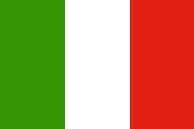

| Voyage | Destination | Meilleure période pour visiter |
|---|---|---|
| Bali | La saison sèche à Bali se déroule de mai à septembre. Le climat y est plus sec. C’est la meilleure période pour Bali. **Soleil et chaleur **seront au rendez-vous, vous pourrez ainsi profiter au maximum des trésors qu’offre cette petite île de l’archipel indonésien ! Même la température de l’eau est tout simplement délicieuse, autour de 28° toute l’année. |
|
|  | Florence | Nous vous conseillons de visiter Florence hors saison, entre mars et juin ou entre septembre et novembre, pour éviter les désagréments de l'affluence touristique. Vous profiterez ainsi d'un temps agréable sans grever votre budget. Si vous tenez absolument à venir en juillet-août, attendez-vous à transpirer au milieu d'un véritable Disneyland Renaissance. Le début de l'hiver, décembre par exemple, s'avère étonnement plaisant. L'air est sec, le soleil au rendez-vous, et les touristes beaucoup plus discrets. |
| Algérie - Annaba | La ville algérienne d'Annaba, située à une centaine de kilomètres de la frontière avec la Tunisie et non loin de la ville tunisienne de Tabarka, jouit d'un climat typiquement méditerranéen. fait rarement froid en hiver, alors que la chaleur est à son apogée en été. Les mois les plus favorables au niveau du climat à Annaba sont Mars, Avril, Mai, Juin, Juillet, |
|
 |
Espagne - Barcelone |